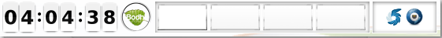

The Bodhi Guide to Enlightenment
Shelves
Shelves in Moksha are similar to the “Panels” used in other environments like Gnome and KDE. The many uses of shelves will be listed and explained here. The default Shelf will contain different Gadgets depending on which Profile is active, but some common ones are: Start, Taskbar, Systray, Clock, and so on. It is possible to add more Gadgets. It is also possible to use the panel as a “dock”, with a little help from the Gadget named iBar. And it is possible to have more than one Shelf. 
Adding a new Shelf
To add a new Shelf, choose Main Menu -> Settings-> Shelves, then press the Add button in the window that appears. You will be asked to provide a name for your new shelf (default is Shelf #n, where n is a number). You will then be given the opportunity to place gadgets on the shelf and to configure it in other ways, for example to specify whereabouts on the screen you want it to be displayed. Of course you may do that later if you prefer.Placing gadgets on the shelf
When you first create a Shelf, it has no Gadgets on it. The Shelf Contents dialog will be displayed so that you can choose which Gadgets you would like to use.Initially all the Gadgets will be shown as inactive. To add a Gadget, select it with your mouse and click Add Gadget. The Gadget will then be shown as active. Finally click Close to add the active Gadgets to your shelf. Which Gadgets are available is controlled by which Modules are loaded, so that section is recommended for reading.
You can add new Gadgets at any time by right-clicking on the Shelf. This will display the Configuration menu.
The first option contains the name of whatever gadget you clicked on. The second contains the name of the shelf. Select Shelf -> Contents. Now you can choose any additional Gadgets you want on your Shelf and click Add Gadget. To rearrange the Gadgets on a shelf, right-click on any Gadget and choose the Begin Moving Gadgets option to move and resize them. After doing this you should right-click again and choose the option to lock the Gadget's size and location.
Configuring the Shelf
You can configure the Shelf directly within the graphical user interface at any time: right-click on the Shelf, then select Shelf -> Settings.Stacking
This tab contains settings to define whether the Shelf will stay below or above other windows and whether other windows will be allowed to cover it.IMPORTANT: If the Shelf contains a Systray Gadget the Shelf must be "Above Everything"
Position
Here you can choose in which corner or on which edge of the screen the Shelf will be located and if it will be shown on all Virtual Desktops or only on one of them.Size
Here you can choose the size and design of the Shelf and define if it will shrink to the content width or will be stretched at one edge.Auto Hide
If you want the Shelf to hide behind an edge when you don't use it you have to check the option Auto-hide the Shelf. If you do this it is recommended to choose the option Above All at the tab Stacking.Dock via iBar
You can make a dock out of an Moksha shelf. To do this add the Gadget iBar and add new icons to it. A Right-click on the Gadget shows the submenu Gadget iBar. There you can add your own app starter via Create new Icon or use predefined app starters with Contents. In Settings and Look you can define its design.| Prev: | Contents: | Next: |
| Themes | Index | Gadgets |